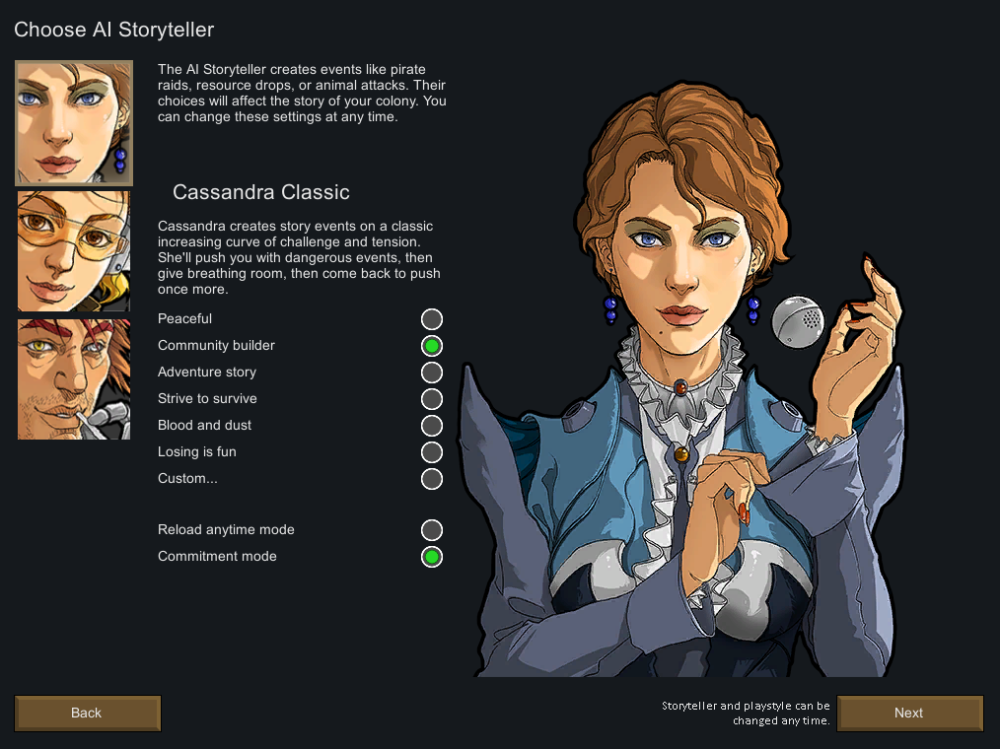
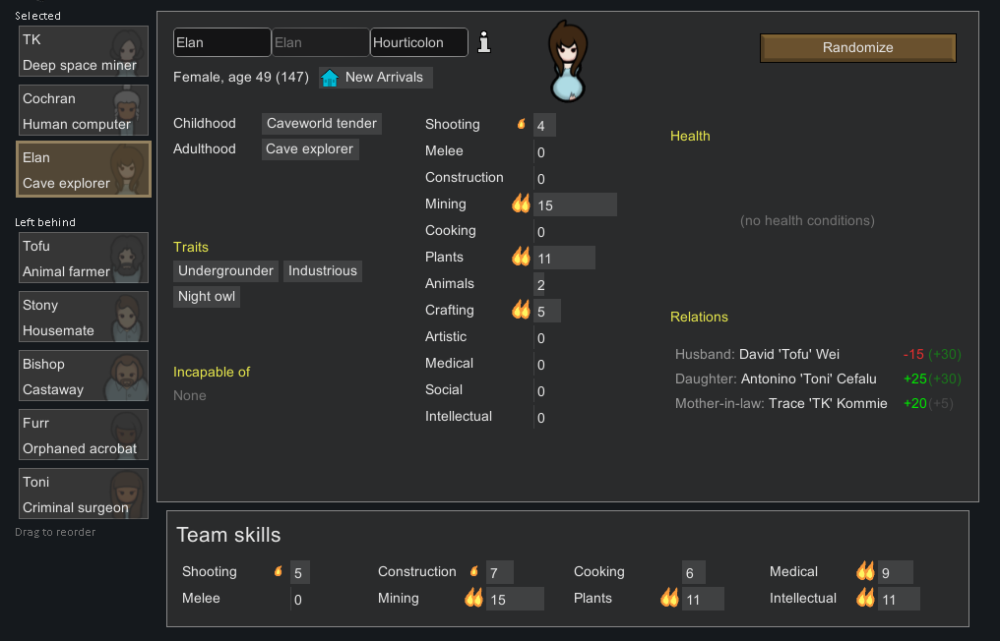
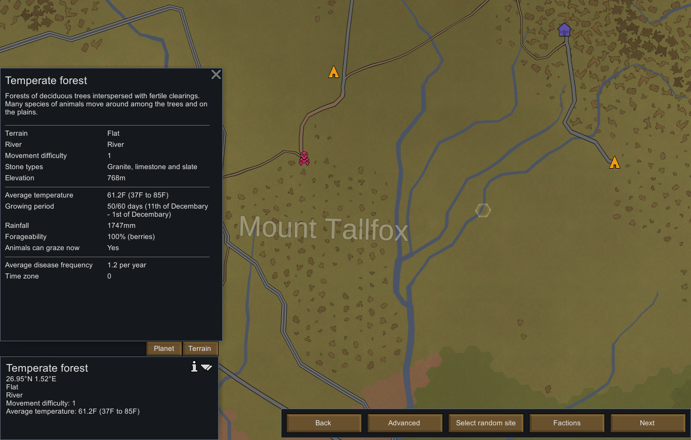

Getting Started
Starting a New Game

At the home menu, you'll have the option to either start a new game or play the tutorial (starting a new game but with guidance). If this is your first time playing, you should probably play the tutorial first. But you can also just do a normal game follow this guide. The first thing to pop up when you start a new game will be the scenario select. A scenario decides what/how many colonists and items you start out with, as well as how much technology you have researched at the start. The "Crashlanded" scenario is most default out of the 4, and is the best choice for a first-timer. (I'll be assuming you chose this one for the rest of this guide.) Next, are the 3 AI Storytellers: Cassandra Classic, Phoebe Chillax, and Randy Random. Their names are pretty self-explainatory and you can read about their characteristics by clicking on them. Despite their differences, all three can be equally hard (unfair even) in their own ways. However, Cassandra and Phoebe on Peaceful or Builder mode are the best suited for beginners. Peaceful difficulty plays like Animal Crossing but with hunger stats. Builder and Adventure are more suited for first-timers or people who don't want a hardcore playthrough. Strive to Survive & Blood and Dust are the challenge modes, and Losing is Fun is exactly what it says on the tin. Committment and Reload Anytime are also self-explainatory, it just depends on how hardcore you want your game to be.
Colonist Selecting

This part easily gets it's own section because of just how important your colonists/pawns are to your ability to survive and thrive. You'll notice that the left side of your screen has a 3 pawns at the top and a list of others that are "left behind". The top 3 are the ones you begin the game with. Move them around to change the team. Clicking on an idividual pawn shows The colonist menu can seem a little overwhelming at first but it's not hard to break it down into sections: the name/nickname, appearance, traits, skills, health, and relationships. Unless your're playing with mods, the only thing you can change about a pawn is the Name and Nickname. You may see that your pawn has some pre-established relationships, but theose aren't too important unless one of the listed people shows up in your playthrough. Health and Age are things you should consider when choosing a colonist. Injurys can affect how well your colonists perform and cause them pain. They can also have addictions that harm their mental health. The older a pawn is biologically, the more likely they are to develope age-related diseases like dementia. Colonists under 18 will lack a second "adulthood" origin story (that isn't necessarily good or bad).
Skills and traits are two most important parts of a pawn. Skills are the stats pawns have (measured in levels) that can be developed over time. Some pawns will have small or large passions for skills (indicated by flames beside the stat) which allow them to grow faster in that skill. Pawns have extra levels in their skills from RNG and their backstory(ies). Some backstories will disable a pawn from using certain skills/doing certain tasks (indicated by a non-existent bar beside a skill). Traits are basically your colonist's personality quirks. Pawns will have 1-3 of these. Traits can be good, bad, both, or neutral. They might make your pawn prettier and better at socializing, or a fast skill learner, or resistent to damage. They may also make them uglier, violent, or a pyromaniac that loves to start fires.
Tip: Pyromaniac is commonly said to be the worst trait because of how much damage fire can do to a base in short time. Players often avoid using these pawns entirely, regardless of their other abilities.

When you're done creating your colony, the next menu will allow to customize how your world generates. The factions on the right don't need to be customized for a person's first time through, so you can leave them alone for now. Customizing the temperature, precipitaion, and population is also ill-advised as changing them too much can create world you may not survive. Changing the seed though is just fine for a beginner, so go ahead. The world map screen divides the planet into many mini-sectors. Choosing one will be your landing spot, and thus, where you build your base. I recommend looking for the Temperate Forest biome, which is a light green area. Try to pick one outside of mountainous areas, which have rocks on their sectors. There are many other biomes too, but this forest is the most beginner friendly. You'll see why by clicking on a sector and then clicking "Terrain". There you'll find a summary of what the biome is like, plus a bunch of other data. Then hit "Next" to start your game!
Tip: I recommend choosing a sector with a river running through it. You can use it for Watermills that provide a consistent source of early game electricity.
Tip: Don't land in a sector within 4 tiles of another faction's base. This will upset them and damage your relations.
Tip: You can click on other bases to find out about their factions and their aggressiveness towards you. Be mindful of hostile factions when placing your base.